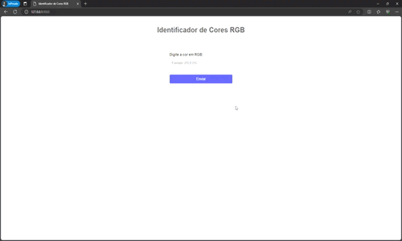

Sistema de biblioteca
Um simples sistema de biblioteca onde o administrador tem acesso a cadastrar livros, cadastrar clientes, emprestar livros e remover clientes
Acessar GitHub
Sistema de controle de estoque
Um sistema onde você pode cadastrar produtos, estoque, categorias, preço e também pode editar e remover os itens.
Acessar GitHub

Identificador de cores
Um projeto com aprendizado de máquina onde o usuário coloca cores RGB e o sistema identifica o nome da cor baseado no código.
Acessar GitHub